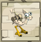
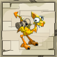
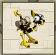
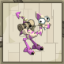
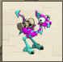

Menu barbok'you

| Race pure | Parents | Bonus | Bonus final | Inventaire | Energie | Maturité | Gestation | Vitesse d'apprentissage |
|---|---|---|---|---|---|---|---|---|
| Amande  |
Amande | +10 ini / lvl +1 créa au lvl 50 |
1000 initiative 1 créature |
100 pods +5 / lvl |
1000 +10 / lvl |
1000 | 48h | 100% |
| donne un parchemin dorée ou ivoire si sauvage | ||||||||
| Rousse |
Rousse | +1 vitalité / lvl | 100 vitalité | 100 pods +5 / lvl |
1000 +10 / lvl |
1000 | 48h | 100% |
| donne un parchemin dorée ou ivoire si sauvage | ||||||||
| Dorée |
Dorée | +1 vitalité / 2 lvl +1 sagesse / 2.5 lvl |
50 vitalité 50 sagesse |
100 pods +5 / lvl |
1000 +10 / lvl |
10000 | 48h | 20% |
| donne un petit parchemin sagesse | ||||||||
| Indigo |
Amande/Rousse avec Amande/Dorée |
+1 vitalité / 2 lvl +0.8 chance / lvl |
50 vitalité 80 chance |
200 pods +10 / lvl |
1200 +20 / lvl |
3000 | 72h | 80% |
| donne un petit parchemin chance | ||||||||
| Ebene |
Amande/Dorée avec Rousse/Dorée |
+1 vitalité / 2 lvl +0.8 agilité / lvl |
50 vitalité 80 agilité |
200 pods +10 / lvl |
1200 +20 / lvl |
3000 | 72h | 80% |
| donne un petit parchemin agilité | ||||||||
| Orchidée |
Ebene/Indigo avec Rousse/Dorée |
+1 vitalité / 2 lvl +0.8 intelligence / lvl |
50 vitalité 80 intelligence |
300 pods +15 / lvl |
1400 +30 / lvl |
5000 | 96h | 60% |
| donne un petit parchemin intelligence | ||||||||
| Pourpre |
Ebene/Indigo avec Rousse/Amande |
+1 vitalité / 2 lvl +0.8 force / lvl |
50 vitalité 80 force |
300 pods +15 / lvl |
1400 +30 / lvl |
5000 | 96h | 60% |
| donne un petit parchemin force | ||||||||
| Ivoire |
Orchydée/Pourpre avec Indigo/Pourpre |
+1 vitalité / 2 lvl +1% dom. / 2 lvl |
50 vitalité 50% dommages |
400 pods +20 / lvl |
1600 +40 / lvl |
7000 | 120h | 60% |
| donne un grand parchemin chance | ||||||||
| Turquoise |
Orchydée/Pourpre avec Ebene/Orchydée |
+1 vitalité / 2 lvl 0.8 prospection / lvl |
50 vitalité 80 prospection |
400 pods +20 / lvl |
1600 +40 / lvl |
7000 | 120h | 60% |
| donne un grand parchemin agilité | ||||||||
| Emeraude |
Ivoire/Turquoise avec Ivoire/Pourpre |
+2 vitalité / lvl +1 PM au lvl 100 |
200 vitalité 1 PM |
500 pods +25 / lvl |
1800 +50 / lvl |
9000 | 144h | 40% |
| donne un puissant parchemin force | ||||||||
| Prune |
OIvoire/Turquoise avec Turquoise/Orchydée |
+2 vitalité / lvl +1 portée / 50 lvl |
200 vitalité 2 Portée |
500 pods +25 / lvl |
1800 +50 / lvl |
9000 | 144h | 40% |
| donne un puissant parchemin intelligence | ||||||||
| Race pure | Bonus | Bonus final | Inventaire | Energie | Maturité | Gestation | Vitesse d'apprentissage |
|---|---|---|---|---|---|---|---|
| 1ére géneration : | |||||||
| Amande Rousse |
5 ini / lvl 1 vitalité / lvl +1 créa lvl 50 |
500 initiative 100 vitalité 2 créatures |
150 pods +5 / lvl |
1100 +15 / lvl |
2000 | 60h | 80% |
| donne un petit parchemin vitalité | |||||||
| Amande Dorée |
5 ini / lvl 1 vitalité / 2 lvl 1 sagesse / 4 lvl +1 créa lvl 50 |
500 initiative 50 vitalité 25 sagesse 1 créature |
150 pods +5 / lvl |
1100 +15 / lvl |
2000 | 60h | 80% |
| donne un petit parchemin sagesse | |||||||
| Rousse Dorée  |
1 vitalité / lvl 1 sagesse / 4 lvl |
100 vitalité 25 sagesse |
150 pods +5 / lvl |
1100 +15 / lvl |
2000 | 60h | 80% |
| donne un petit parchemin sagesse | |||||||
| 2éme géneration : | |||||||
| Amande Indigo |
5 ini / lvl 1 vitalité / 2 lvl 0.6 chance / lvl +1 créa lvl 50 |
500 initiative 50 vitalité 60 chance 1 créature |
250 pods +10 / lvl |
1300 +25 / lvl |
4000 | 84h | 80% |
| donne un petit parchemin chance | |||||||
| Rousse Indigo |
3 vitalité / 2 lvl 0.6 chance / lvl |
100 vitalité 60 chance |
250 pods +10 / lvl |
1300 +25 / lvl |
4000 | 84h | 80% |
| donne un petit parchemin vitalité | |||||||
| Dorée Indigo |
1 vitalité / lvl 1 sagesse / 4 lvl 0.6 chance / lvl |
100 vitalité 25 sagesse 60 chance |
250 pods +10 / lvl |
1300 +25 / lvl |
4000 | 84h | 80% |
| donne un petit parchemin sagesse | |||||||
| Amande Ebene |
5 ini / lvl 1 vitalité / 2 lvl 0.6 agilité / lvl +1 créa lvl 50 |
500 initiative 50 vitalité 60 agilité 1 créature |
250 pods +10 / lvl |
1300 +25 / lvl |
4000 | 84h | 80% |
| donne un petit parchemin agilité | |||||||
| Rousse Ebene |
3 vitalité / 2 lvl 0.6 agilité / lvl |
100 vitalité 60 agilité |
250 pods +10 / lvl |
1300 +25 / lvl |
4000 | 84h | 80% |
| donne un petit parchemin vitalité | |||||||
| Dorée Ebene  |
1 vitalité / lvl 1 sagesse / 4 lvl 0.6 agilité / lvl |
100 vitalité 25 sagesse 60 agilité |
250 pods +10 / lvl |
1300 +25 / lvl |
4000 | 84h | 80% |
| donne un petit parchemin sagesse | |||||||
| Indigo Ebene |
1 vitalité / lvl 1 agilité / 2 lvl 1 chance / 2 lvl |
80 vitalité 50 chance 50 agilité |
250 pods +10 / lvl |
1300 +25 / lvl |
4000 | 84h | 80% |
| donne un petit parchemin chance | |||||||
| 3éme géneration : | |||||||
| Amande Orchidée  |
5 ini / lvl 1 vitalité / 2 lvl 0.6 int / lvl |
500 initiative 50 vitalité 60 intelligence |
350 pods +15 / lvl |
1500 +35 / lvl |
6000 | 108h | 60% |
| donne un parchemin vitalité | |||||||
| Rousse Orchidée |
3 vitalité / lvl 0.6 int / lvl |
150 vitalité 60 intelligence |
350 pods +15 / lvl |
1500 +35 / lvl |
6000 | 108h | 60% |
| donne un parchemin intelligence | |||||||
| Dorée Orchidée |
1 vitalité / lvl 1 sagesse / 4 lvl 0.6 int / lvl |
100 vitalité 25 sagesse 60 intelligence |
350 pods +15 / lvl |
1500 +35 / lvl |
6000 | 108h | 60% |
| donne un parchemin sagesse | |||||||
| Indigo Orchidée |
1 vitalité / lvl 1 int / 2 lvl 1 chance / 2 lvl |
100 vitalité 50 intelligence 50 chance |
350 pods +15 / lvl |
1500 +35 / lvl |
6000 | 108h | 60% |
| donne un parchemin chance | |||||||
| Ebene Orchidée |
1 vitalité / lvl 1 int / 2 lvl 1 agilité / 2 lvl |
100 vitalité 50 intelligence 50 agilité |
350 pods +15 / lvl |
1500 +35 / lvl |
6000 | 108h | 60% |
| donne un parchemin agilité | |||||||
| Amande Pourpre |
5 ini / lvl 1 vitalité / 2 lvl 0.6 force / lvl +1 créa lvl 50 |
500 initiative 50 vitalité 60 force 1 créature |
350 pods +15 / lvl |
1500 +35 / lvl |
6000 | 108h | 60% |
| donne un parchemin force | |||||||
| Rousse Pourpre |
3 vitalité / lvl 0.6 force / lvl |
150 vitalité 60 force |
350 pods +15 / lvl |
1500 +35 / lvl |
6000 | 108h | 60% |
| donne un parchemin force | |||||||
| Dorée Pourpre |
1 vitalité / lvl 1 sagesse / 4 lvl 0.6 force / lvl |
100 vitalité 25 sagesse 60 force |
350 pods +15 / lvl |
1500 +35 / lvl |
6000 | 108h | 60% |
| donne un parchemin sagesse | |||||||
| Indigo Pourpre |
1 vitalité / lvl 1 force / 2 lvl 1 chance / 2 lvl |
100 vitalité 50 force 50 chance |
350 pods +15 / lvl |
1500 +35 / lvl |
6000 | 108h | 60% |
| donne un parchemin chance | |||||||
| Ebene Pourpre |
1 vitalité / lvl 1 force / 2 lvl 1 agilité / 2 lvl |
100 vitalité 50 force 50 agilité |
350 pods +15 / lvl |
1500 +35 / lvl |
6000 | 108h | 60% |
| donne un parchemin agilité | |||||||
| Orchidée Pourpre |
1 vitalité / lvl 1 force / 2 lvl 1 int / 2 lvl |
100 vitalité 50 force 50 intelligence |
350 pods +15 / lvl |
1500 +35 / lvl |
6000 | 108h | 60% |
| donne un parchemin intelligence | |||||||
| 4éme géneration : | |||||||
| Amande Turquoise |
5 ini / lvl 0.5 vitalité / lvl 0.4 PP / lvl |
500 initiative 50 vitalité 40 prospection +1 créa |
450 pods +20 / lvl |
1700 +45 / lvl |
8000 | 132h | 40% |
| donne un grand parchemin vitalité | |||||||
| Rousse Turquoise |
450 pods +20 / lvl |
1700 +45 / lvl |
8000 | 132h | 40% | ||
| donne un grand parchemin | |||||||
| Dorée Turquoise |
450 pods +20 / lvl |
1700 +45 / lvl |
8000 | 132h | 40% | ||
| donne un grand parchemin sagesse | |||||||
| Indigo Turquoise |
1 vitalité / lvl 0.6 chance / lvl 0.4 PP / lvl |
100 vitalité 60 chance 40 prospection |
450 pods +20 / lvl |
1700 +45 / lvl |
8000 | 132h | 40% |
| donne un grand parchemin chance | |||||||
| Ebene Turquoise |
1 vitalité / lvl 0.6 agilité / lvl 0.4 PP / lvl |
100 vitalité 60 agilité 40 prospection |
450 pods +20 / lvl |
1700 +45 / lvl |
8000 | 132h | 40% |
| donne un grand parchemin agilité | |||||||
| Pourpre Turquoise |
1 vitalité / lvl 0.6 force / lvl 0.4 PP / lvl |
100 vitalité 60 force 40 prospection |
450 pods +20 / lvl |
1700 +45 / lvl |
8000 | 132h | 40% |
| donne un grand parchemin force | |||||||
| Orchydée Turquoise  |
1 vitalité / lvl 0.6 int / lvl 0.4 PP / lvl |
100 vitalité 60 intelligence 40 prospection |
450 pods +20 / lvl |
1700 +45 / lvl |
8000 | 132h | 40% |
| donne un grand parchemin intelligence | |||||||
| Amande Ivoire |
5 ini / lvl 0.4 vitalité / lvl 0.4% dom / lvl |
500 initiative 40 vitalité 40% dommage +1 créa |
450 pods +20 / lvl |
1700 +45 / lvl |
8000 | 132h | 40% |
| donne un grand parchemin chance | |||||||
| Rousse Ivoire |
2 vitalité / lvl 0.4% dom / lvl |
200 vitalité 40% dommage |
450 pods +20 / lvl |
1700 +45 / lvl |
8000 | 132h | 40% |
| donne un grand parchemin vitalité | |||||||
| Dorée Ivoire |
1 vitalité / lvl 0.4% dom / lvl 0.25 sagesse |
100 vitalité 40% dommage +25 sagesse |
450 pods +20 / lvl |
1700 +45 / lvl |
8000 | 132h | 40% |
| donne un grand parchemin sagesse | |||||||
| Indigo Ivoire |
1 vitalité / lvl 0.4 chance 0.4% dom / lvl |
100 vitalité 40 chance 40% dommage |
450 pods +20 / lvl |
1700 +45 / lvl |
8000 | 132h | 40% |
| donne un grand parchemin chance | |||||||
| Ebene Ivoire |
1 vitalité / lvl 0.4 agilité 0.4% dom / lvl |
100 vitalité 40 agilité 40% dommage |
450 pods +20 / lvl |
1700 +45 / lvl |
8000 | 132h | 40% |
| donne un grand parchemin agilité | |||||||
| Pourpre Ivoire |
1 vitalité / lvl 0.4 force 0.4% dom / lvl |
100 vitalité 40 force 40% dommage |
450 pods +20 / lvl |
1700 +45 / lvl |
8000 | 132h | 40% |
| donne un grand parchemin force | |||||||
| Orchydée Ivoire |
1 vitalité / lvl 0.4 int 0.4% dom / lvl |
100 vitalité 40 intelligence 40% dommage |
450 pods +20 / lvl |
1700 +45 / lvl |
8000 | 132h | 40% |
| donne un grand parchemin intelligence | |||||||
| Turquoise Ivoire |
1 vitalité / lvl 0.4 PP 0.4% dom / lvl |
100 vitalité 40 prospection 40% dommage |
450 pods +20 / lvl |
1700 +45 / lvl |
8000 | 132h | 40% |
| donne un grand parchemin agilité | |||||||
| 5éme géneration : | |||||||
| Emeraude Rousse |
3 vitalité / lvl +1 PM lvl 100 |
1 PM 300 vitalité |
550 pods +25 / lvl |
+ / lvl |
10000 | 156h | 20% |
| donne un puissant parchemin vitalité | |||||||
| Emeraude Amande |
550 pods +25 / lvl |
+ / lvl |
10000 | 156h | 20% | ||
| donne un puissant parchemin ... | |||||||
| Emeraude Dorée |
550 pods +25 / lvl |
+ / lvl |
10000 | 156h | 20% | ||
| donne un puissant parchemin sagesse | |||||||
| Emeraude Ebene |
1 vitalité / lvl 0.3 agi / lvl +1 PM lvl 100 |
1 PM 100 vitalité 30 agi |
550 pods +25 / lvl |
+ / lvl |
10000 | 156h | 20% |
| donne un puissant parchemin force | |||||||
| Emeraude Pourpre |
1 vitalité / lvl 0.3 force / lvl |
1 PM 100 vitalité 30 force |
pods + / lvl |
+ / lvl |
10000 | h | 20% |
| donne un puissant parchemin force | |||||||
| Emeraude Ivoire |
1 vitalité / lvl 0.2% dom / lvl |
1 PM 100 vitalité 20% dom |
pods + / lvl |
+ / lvl |
10000 | h | 20% |
| donne un puissant parchmin chance | |||||||
Dofus est un MMORPG édité par Ankama." Barbok " est un site non-officiel sans aucun lien avec Ankama.
Toutes les illustrations sont la propriété d'Ankama Studio et de Dofus. Le contenu de ce site a été rédigé initialement par Immortal, il ne s'agit que d'une remise en ligne effectuée par Eternal Games.